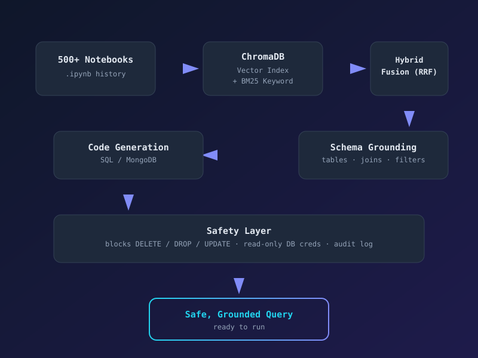

Internal Tool · Data & AI Analyst, AssetPlus
Codebase Chat — Notebook-Grounded SQL/Query Generator
A fully offline RAG system that turns plain-English data questions into schema-aware, safe-by-construction PostgreSQL/MongoDB code — grounded in 500+ real internal notebooks instead of generic examples. Every result is retrieved via hybrid semantic + BM25 search, fused with Reciprocal Rank Fusion, grounded against the actual database schema, and scanned by a guardrail layer that blocks destructive operations before it ever reaches the analyst. Verified patterns feed back into a persistent approved-pattern memory, so the tool keeps improving on the team's own conventions.
- Indexed 500+ Jupyter notebooks into a local ChromaDB vector store
- Hybrid retrieval — vector search + BM25, merged via RRF
- Schema-grounded generation with mandatory join/filter hints
- Guardrails against destructive ops + read-only DB enforcement + audit log
- Self-improving approved-pattern memory store
- Actively used in production for partner segmentation & growth-metric reporting